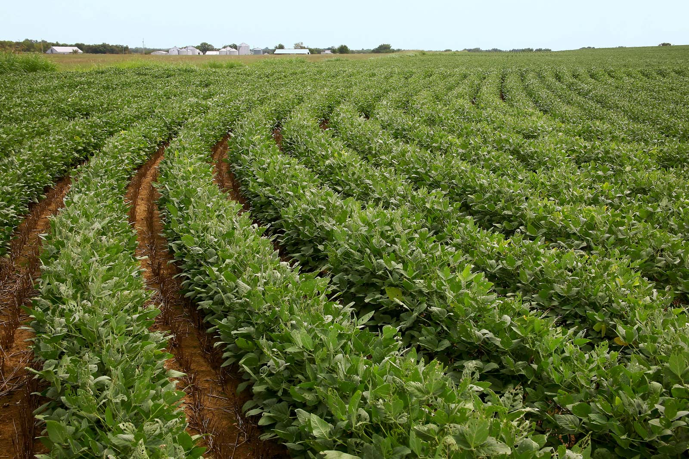

The Tana River is a major water resource in the area. The expansive delta created by the river is characterized by
wetlands, presenting great potential for agriculture. The water is used for irrigation of the produce. This sector thus
provides the veins that keep the county economy productive.
The following are some plants that prevail in our climate conditions:
Bananas
Various varieties of bananas grow in the county making this an attractive agro – product for value addition due to its abundance. Investors are invited to set up processing plants for this readily available products into juice, crisps, wafers, cakes and flour amongst others.

Soy Beans
Soya beans can be grown in tropical areas like the proposed project area as one way of enriching the soils. The crop may be grown along the river terraces. Kenya Agricultural Research Institute (KARI) has developed the variety to suit the Tana Delta area. Soya beans is ideal for inter-cropping with other traditional crops and it has market value for children feed, protein for family and fodder.